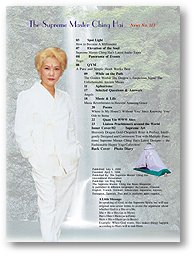

Maître Suprême Ching Hai Revue n° 113
Sous les projecteurs * Comment devenir millionnaire
Élévation de l'âme * Les dernières cassettes audio de Maître Ching Hai
Panorama d'événements * Togo
*Un coeur pur et simple travaille mieux
* Le Monde en Or * Les signes de bon augure du dragon * L'Ancien Maître insondable
Aphorismes
*Aphorismes
*Les anges
*La musique se répercute au paradis * La grâce stupéfiante
*Où est ma maison ?* Sans Vous* Depuis que je Vous connais*Ode à Suma
*Le porte-baguettes en or de la série du Dragon Céleste*Une tente multifonctions pratique, intelligemment conçue et parfaite* Les dernières créations de Maître Suprême Ching Hai -- La collection à la mode du Joyeux Yogi !
Télécharger les fichiers F113
Une âme qui s'est réalisée émet une sorte de senteur divine et des vertus hors du commun et tout le monde aime être à ses côtés, et se sent à l'aise avec elle.
~ Prononcé par Maître Suprême Ching Hai
Revue n° 113
Sommaire